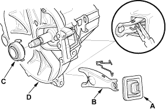
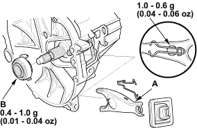
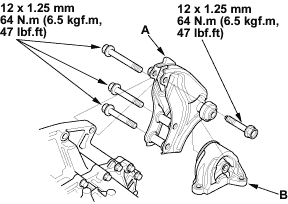

- Remove the boot (A), the release fork (B), and the release bearing (C) from the transmission (D).


- Check the two dowel pins are installed in the clutch housing.
- Apply Urea Grease UM264 (P/N 41211-PY5-305) to the release fork (A) and the release bearing (B). Install the release fork and the release bearing.

- Install the transmission rear mount bracket (A) and the transmission rear mount (B).

- Place the transmission on the transmission jack, and raise it to the engine level.